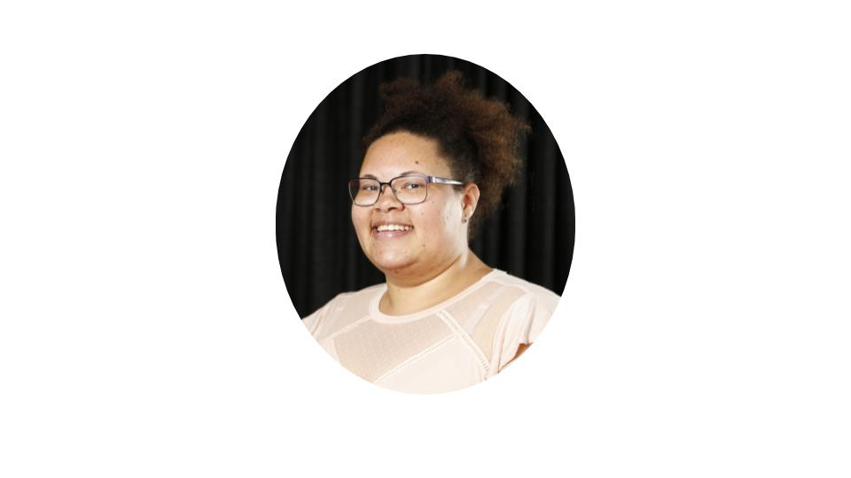

Ace & Aro Conference 2019 – Aces NYC
We are so excited to host a conference during 2019 World Pride for the asexual and aromantic spectrum communities and this year it’s sponsored by WorldPride Pride NYC!
We have been working hard to create events that will share the work being done in the ace and aro communities, bring people together, and build community.
When is it? Saturday June 29th from 9:00am – 5:00pm
Where is it? The Grace Institute at 40 Rector Street, New York, NY 10006
What is it? This will be a conference with a few different tracks people can choose from:
- There will be invited speakers sharing their work, such as authors, researchers, artists, and others. Check out Who’s Coming? below.
- Space will be reserved for caucus style meetings for those who have different intersectional experiences, rotating between groups throughout the day. For example, a POC Caucus, a Trans/Non-binary Caucus, Aromantic & Allosexual Caucus, and more.
- Un-Conference Style workshops. An un-conference lets attendees shape how they would like to spend their time, removes traditional conference hierarchy, and encourages spontaneous connections. We will take time in the beginning of the day to set an agenda collectively, for a select portion of the conference workshop time slots.
- Interactive workshops such as ones on Fast Friending and creating a Collective Experiences Mural.
Lunch is included in a conference ticket with vegan and gluten free options provided. Please indicate dietary restrictions on the ticket questionnaire.
Caucus Spaces
Caucus spaces are spaces reserved for people who self identify with the group that is meeting. For example, a caucus space for aromantic people would be a space exclusively reserved for aromantic people. The same is true for a space for people of color, or a space for trans and non-binary people.
Who's Coming
For the Ace & Aro 2019 Conference, we have a few highlighted speakers we’re absolutely thrilled about!
Angela Chen

Angela Chen is an ace journalist and essayist in New York. Her first book, ACE: Understanding Asexuality and Culture, is forthcoming from Beacon Press and she is currently a staff science reporter for The Verge.
Ac(e)ing Writing for the Public
Angela Chen & Julie Kliegman
Journalists Angela Chen (author of the forthcoming book Ace: Understanding Asexuality and Society) and Julie Kliegman (The Ringer) discuss the challenges and opportunities of writing about asexuality for the mainstream media. Chen and Kliegman will talk about their experiences as ace journalists working with allo editors, the good and bad of other coverage of asexuality, and suggest best practices for those who are also interested in contributing to the conversation.
- angelachen.org
- @chengela on Twitter
Ashia Monet
Ashia Monet is an arospec speculative fiction author whose stories focus on queer POC, as well as the importance (and beauty) of platonic relationships—usually including magic and monsters wherever she can fit them in. She is the author of the coming novel THE BLACK VEINS (2019), the first in the Dead Magic series.
Writing for Arospec Teens: A Panel On Arospec Identities (or lack thereof) In YA Literature
Ashia Monet
As diversity is rapidly expanding in young adult literature, there is no better time to provide arospec teens with the on-page representation they deserve. Ashia Monet shares her experiences as an aromantic teen reader and author to shine some light on creating content with an arospec teen audience in mind. Find the recording here.
- Twitter @ashiamonet
- Instagram @ashiawrites
- Website ashiamonetwrites.wordpress.com
Carmelo Lopez

Carmelo is the filmmaker for the Asexuals documentary film premiering Friday night June 28th. He lives in Los Angeles where he freelances as a producer, editor, and videographer.
Cit Callahan
Cit Callahan is a triracial author, artist, and sensitivity reader. Known for eir writing and twitter rants, e has worked to diversify the creative
arts through diverse writing, education, and the Common Bonds Anthology centering aromantic stories.
Apolitical Politics: Exploring the People Behind "Issue Books"
C.T. Callahan
How do you create apolitical, diverse art in a climate where being marginalized is an act of politics? This talk explores the art of sensitively navigating intersectional diversity beyond educational stories of oppression. Attendees are encouraged to come prepared with questions regarding their own projects. Find the recording here.
Ianna Hawkins Owen
Ianna Hawkins Owen is an assistant professor of English at Williams College where she teaches African Diasporan and African American literature. Her published work includes “Still, Nothing: Notes on Mammy and Black Asexual Possibility” in Feminist Review and “On the Racialization of Asexuality” in Asexualities: Feminist and Queer Perspectives. Her forthcoming work looks at asexuality through a critical eating studies lens.
Asexuality Research in Academia
Ianna Hawkins Owen & Jasmine Stork
Ianna will be focusing this talk on asexual intimacy and thingness in the art of ruby onyinyechi amanze. She has done considerable work around asexuality and race, but also be sure to ask her about cake as an overlap between feedism and asexuality! Jasmine’s presentation “Fiction Does Work: Asexuality in Avengers Fanfiction” will focus on dissertation work looking at the intersection of asexuality and asexual communities with fanfiction and fan communities. It will include a brief discussion about studying asexuality and asexual representation in relation to popular media and will incorporate conversation on the need for academic research to better reflect and promote asexual community interests.
Jasmine Stork
Jasmine is a graduate student at the Ohio State University writing a dissertation on asexuality in fanfiction. She originally identified as ‘bisexual but not really sexual’, has identified as Ace since college, and has recently realized that she tends towards aromanticism. She has engaged with asexual communities and in conversations about asexuality both online and in-person for nearly 10 years.
Asexuality Research in Academia
Ianna Hawkins Owen & Jasmine Stork
Ianna will be focusing this talk on asexual intimacy and thingness in the art of ruby onyinyechi amanze. She has done considerable work around asexuality and race, but also be sure to ask her about cake as an overlap between feedism and asexuality! Jasmine’s presentation “Fiction Does Work: Asexuality in Avengers Fanfiction” will focus on dissertation work looking at the intersection of asexuality and asexual communities with fanfiction and fan communities. It will include a brief discussion about studying asexuality and asexual representation in relation to popular media and will incorporate conversation on the need for academic research to better reflect and promote asexual community interests.
- @aviarynotes
Julie Kliegman
Julie Kliegman is a copy editor with The Ringer. As a member of the ace community, she also writes, reports, and edit stories both related to asexuality and not.
Ac(e)ing Writing for the Public
Angela Chen & Julie Kliegman
Journalists Angela Chen (author of the forthcoming book Ace: Understanding Asexuality and Society) and Julie Kliegman (The Ringer) discuss the challenges and opportunities of writing about asexuality for the mainstream media. Chen and Kliegman will talk about their experiences as ace journalists working with allo editors, the good and bad of other coverage of asexuality, and suggest best practices for those who are also interested in contributing to the conversation.
Kotaline Jones
Kotaline Jones is a cartoonist, illustrator, and educator whose work has dealt with topics of identity such as coming out as asexual and aromantic. She has been published on Narratively, worked in publishing for TOON books, and led comics classes and lectures both in Vermont and New Hampshire.
Autobiography and Identity: Speaking Honestly Through Comics
Kotaline Jones
Autobiography can be a difficult subject for people inhabiting one or more marginalized identities, who are often asked to explain themselves as a matter of course in their day to day lives. This session discusses the challenge of finding your voice and discussing difficult topics in an empowering way through the medium of autobiographical comics. Using both personal anecdotes from the speaker and exploring the larger body of autobiographical comics, this session will explore different approaches to similarly personal stories and subjects.Find the recording here.
Michón Neal –aka Tesla, aka Gentleman Goddess/xx

Michón is an autistic Othergender BlaQueer dragon who tattoes dead trees with the most sinister
ink and ze hurts all over all the time. Ze is actively involved in creating language, stories, and resources for other aromantic people,
and though not always quite at home in the ace community, writes inclusive stories about asexuality.
Aro Eros Arrows
Michón Neal
Concentrates on toxic dating culture, amatonormativity, rape culture, and other relationship and intimacy concerns through the lens of aromanticism. Next to asexuality, this is one of the most widely misinterpreted identities. Explore the realities of this orientation, the types of relationships that are healthiest, and the value of friendship. This will draw from and expand upon material in the upcoming book of the same name.
- Creator of Michón Con
- Founder of Cuil Press
- Public Speaker and Accountability Counselor
- Guide through INM
Olivia Montoya

Olivia Montoya is a 27-year-old (disabled, autistic, chronically ill, latinx, femme, queer-identified) bi/panromantic gray-aromantic (gray) asexual who has participated in asexual
communities since 2011 and has identified as asexual to some degree since
before even that. Since becoming more open about her asexuality, Olivia has gone out of her way to promote asexual acceptance, representation, and education. Her current
primary awareness projects are the Ace Zine Archive, co-founded in 2015, which documents discussions of asexuality in the zine community, and Ace Jam, a month-long online
game jam about creating games (digital and analog) with asexual characters that recently ran for its second time. She is deep in the planning stages of editing the first
ever asexual comic anthology. She also writes about asexuality and gray-aromanticism in her own zines, edited a free compilation zine on asexuality and relationships
titled Asexual Content #1, and makes diverse queer narrative video games with asexual characters.
Ace and Aro Zines as Community History and Community Building
Olivia Montoya
After years of independent research, Olivia Montoya of the Ace Zine Archive will present some of her discoveries about early explorations of asexuality in zine communities (even predating the online asexual community), how zines can be used to document the changes in ace and aro communities and terminology over time, and current trends in asexual and aromantic zines and their impact. She will also give some basic zines 101, explain how zines can be used for ace and aro education and activism, and provide tools for creating ace and aro zines yourselves. Participants can also contribute to a compilation zine of Ace + Aro Conference experiences, which will be released for free online. Find the recording here.
- Patreon OliviasZines
- Twitter @paradoxrevealed
- Instagram @oliviam.11
- http://metaparadox.itch.io/
- Ace Zine Archive
- Etsy Paradox Now Creations
- Olivia Reads Zines
Tristan (Siggy)
Tristan is an activist best known for his work on the blog The Asexual Agenda, and the Ace Community Survey Team. As a mixed-race grayro/grace, he believes it is important understand the diversity of ace and aro experiences.
Meet The Ace Community Survey Team
Tristan Miller & Bauer
The Ace Community Survey is an survey of online English ace communities, with over 10,000 responses a year. It is useful not just to researchers, but to a community trying to understand itself. In this session we will discuss what goes into the survey, and also how we might create a survey focusing on aro communities. Find the recording here.